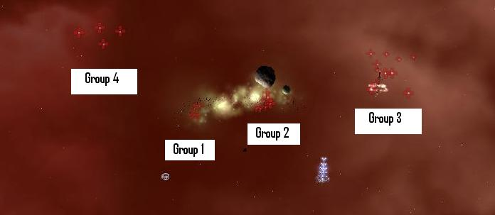
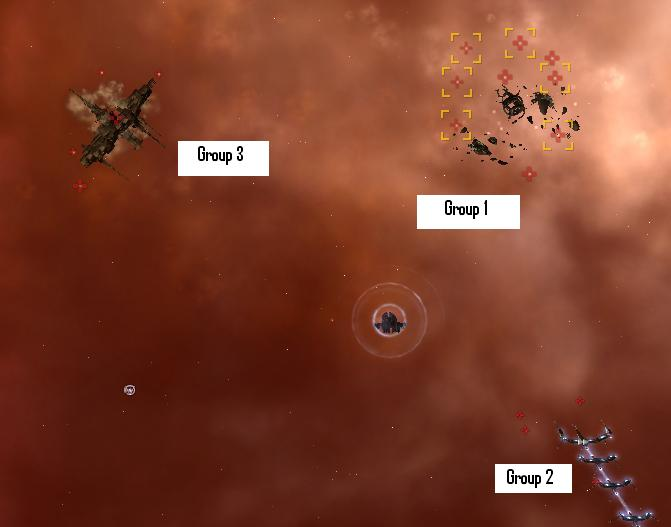
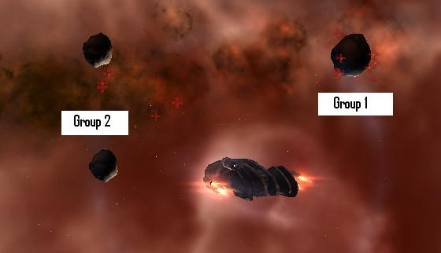

The Assault, Level 4
Last edited by OdotakMotsu
Sun, 17 Apr 2016 23:39 UTC
Sun, 17 Apr 2016 23:39 UTC
Faction: Serpentis
Mission type: Encounter
Space type: Deadspace with gates
Damage dealt: TH/KI
Extras: Heavy Dampening (Guardian Chief Patrollers/Core Flotilla Admiral/Core Vice Admiral)
Web/scramble: Guardian Frigates
Recommended damage dealing: Kin, therm
Video: http://youtu.be/6LAXvnJKRgs , Vargur , Golem , Sniping Imperial Apocalypse
Pocket 1
No auto aggro. Some drone aggro.Attacking Group 1 might aggro Group 2.
Attacking Group 3 aggros Group 2.
Group 4 is passive.
Distance to closest NPC is 45km.
Blitz: The gate is not locked, go straight to Pocket 2.
Group 1:
2x Frigates (Guardian Spy) (Orbit at 9km) Web/Scramble4x Cruisers (Guardian Chief) (Orbit at 17km) Damp
Group 2:
3x Destroyer (Corelior Infantry)4x Battlecruisers (Corelatis Platoon Leader/Squad Leader) Trigger
2x Battleships (Core Admiral/Vice Admiral) Trigger/Damp Vice Admiral
Group 3:
5x Destroyers (Corelior Infantry/Sentinel)3x Battlecruisers (Corelatis Squad Leader) (Orbit at 5km)
4x Battleships (Core Flotilla Admiral/Rear Admiral) Damp Flotilla Admiral
Group 4:
4x Battleships (Core Flotilla Admiral/Vice Admiral) DampSingle Spawn:
Spawned when you attack one of BC or BS in Group 2
3~4x Battleships (Core Port Admiral/Rear Admiral/Vice Admiral) (Orbit at 38km) Damp Vice Admiral
3~4x Frigates (Guardian Protector) (Orbit at 9km) Web/Scramble
Tip: Aggro Sequences:
Pocket 1 - Group Sequence 4 3 2 1
- Attacking Group 4 will aggro Group 3
- Attacking Group 3 will aggro Group 2
- Attacking Group 2 will aggro Group 1

Mineable Asteroids:
Veldspar: 1,250,000 to 1,500,000 unitsPlagioclase: 550,000 to 700,000 units
Pyroxeres: 550,000 to 620,000 units
Pocket 2
Distance to closest NPC is 16km.Blitz: The gate is not locked, go straight to Pocket 3.
Group 1: (Auto aggro)
3x Battlecruisers (Corelatis Squad Leader)6x Battleships (Core Commodore/Port Admiral)
Group 2: (Auto aggro)
4x Frigates (Guardian Agent/Spy) Web/ScrambleGroup 3:
3x Destroyers (Corelior Sentinel/Cannoneer)2x Battleships (Core High Admiral/Grand Admiral) Trigger
Single Spawn:
will be spawned and aggroed when you attack battleships in Group 3
3x Frigates (Coreli Initiate)
4x Battleships (Core Port Admiral/Flotilla Admiral/Vice Admiral/Grand Admiral) Damp Flotilla Admiral/Vice Admiral

Pocket 3
No Agro on warp in.Drone Agro from group 1.
Agro from group 2 on ~40km.
Distance to closest NPC is 58km.
Blitz: Kill group 2.
Group 1:
2x Frigates (Guardian Agent) Web/Scramble2x Cruisers (Guardian Chief Infantry/Corelum Guardian Chief Sentinel)
3x Battlecruisers (Corelatis Squad Leader/Platoon Leader)
1x Battleship (Core High Admiral)
Group 2:
1x Cruiser (Corelum Chief Infantry)1x Battlecruiser (Corelatis Platoon Leader)
3x Battleships (Core Port Admiral/Rear Admiral)

Blitz Overview
pocket 1 gate isn't locked. ignore or kill as you pleasepocket 2 gate isn't locked but can be webbed&scrambled. Kill frigates if needed then use gate.(drones are easiest for longer ranged weapons)
pocket 3 destroy group 2 (finish quickly or deal with web/scramble as needed)
Turn in
Bounty
22-23 millionVideo
This video is only one of many ways to do this mission.http://youtu.be/6LAXvnJKRgs
CategoryMissions
CategoryLevel4
Try to keep (tank) those two trigger ships until you have cleared the rest of the room. And watch those other groups! They have a tendency to creep slowly nearer without openly advertising their intend. This makes it especially difficult for your drones. Remember to take out those sensor dampening cruisers. They are evil.
I did not notice the discrepancy with this report until looking for tips on room 2. n.b. I did spend a good deal of time 35-40 minutes in this stage before the new spawn arrived.
First room : difficulty shield :50% full (average)
group 4, group 1, group 3 and finally group 2
trigger was a core Admiral. Spawn at first shoot.
spawn : 3 core port Admiral + some frigates I think
Second room : difficulty shield : 60-90% full (very easy)
group 1 and 2 then group 3
trigger was a Core High Admiral. Spawn at first shoot.
spawn 4 vice admiral + frigates
Third room : difficulty shield :90% (no difficulty)
group 1 then group2 ( Both group at the same time should also be OK)
1 - Start out kiting, take out Guardian frigs.
(1b - Take out Guardian cruisers to cut down damping for step 2, not necessary but reduces the hassle of trying to lock between damping cycles)
2 - Trigger extra spawn and take out Guardian frigs
(2b - Reel in drones if they take aggro from the new spawn)
3 - Aggro the rest of the pocket, orbit something at 40km or so with AB on... and after that not much more supervision is required while the drones do their job.
Pocket 2 is about the same, but seems to be less to worry about in the triggered spawn.
I run this with one MAR II and two hardeners, so there's two low slots left which there's not much use for when semi-afk and letting the drones to the work... could probably fit for speed and go fast enough to outrun the Guardian frigs as well.
A bunch of battleships in the first room use autocannons, so try to keep your distance. If you can stay 10k+ away from them then you greatly decrease their DPS.
Nothing scrambled me, so it was no big deal to warp out then come back. I had my droneses take out the frigates ASAP to knock out any potential scramblers.
I would guess the room is about 800-1,000 DPS if you agro most of the room. Someone said earlier that it is about 1,300 DPS in the first room, and that's probably about right if you agro all groups at once.
The second and third rooms are a joke.
In the third pocket the whole room aggro'd me once I took on the closest target.
Nice mission for bounties and salvage.
domi cannot tank all of first room (just ran it) while sitting STILL. have your drones pick off the bcs (after scramming frigs) while orbiting the accel gate at 1000m
There are also plag, pyrx, and veldspar in the first room, not sure how much though.
I have to constantly pull my Warden II's back in. I AB away from the gate after warping out when two groups at least aggroed after destroying "group 2" with no obvious side aggro.
I hate illogical behavior with NPCs...
Full Clear
Pocket 1
Kill order 1-4-2-3 (group 2 all but trigger BSs)
Moved behind warp gate 2km and sat, killed group 1 no additional aggro, killed group 4 no additional aggro, killed most of group 2 no additonal aggro. Kind of fell apart after I gained remaining pocket aggro (group 3 + spawn) once I attacked the Trigger Battleships in group 2, should have moved on to group 3 first. At this point my drones also gained aggro from the spawn by attacking the Battleships in group 2.
Pocket 2
Didn't move, killed group 2 with hobos. No auto-aggro from group 1 until I got within range of the warp gate and deployed sentries, not sure which condition triggered the aggro, or if I was just lucky today, but group 2 aggroed me and group 3 aggroed my drones. Pulled in drones and group 3 de-aggroed and went back to their initial location. Deploying drones again, even different drones, aggroed group 3 on them again.
Pocket 3
1-2 Buckle my shoe. Structures drop no loot.
Aggroed entire room, unleashed drones, and went to have a nap.
Mids'3: omnidirectional trackers, cap recharger 2
Rigs: sentry damage augmentor shoots off bs and cruisers from 6km and onwards to 60km and 2 ccc
Drones: gardes, hammerhead, ogres all t2
Pocket 1: picked out group 4, 1 and then 2 and 3 together with the spawn.
Pocket 2: aggroed entire room, picked off the frigs and let the gardes do it's job.
Pocket 3: same as nr.2
The majority of the damage is from short range blasters. Distance makes a fine substitute for the 2x LAR II, etc. armor tank.
Pocket 1 ... low dps order verified as:
Group 1 -- nothing else aggros
Group 4 -- nothing else aggros
Group 2 EXCL battleships -- nothing else aggros
Group 2 battleships -- reinforcing spawn shows but Group 3 stays quiet
Reinforcements -- Group 3 does nothing
Group 3 -- last.
Damping from Group 1 is heavy -- you'll fight the cruisers at less than 30km
Flotilla Admiral in Group 4 also damps, but only for about 10 seconds out of every minute.
Pocket 2 ... autoaggro hasn't happened -- twice in a row now. But all three Groups aggro after shooting Group 2.
Pocket 3 ... completion objective is kill ALL ships. Leave smallest if you want to rerun the mission.
T2 equipped Raven with no rigs and T1 Wrath cruise missiles. Kin drones in light and medium sizes. Shields -- three T2 hardeners, three T2 extenders, two T2 spr, one T2 pds -- never below 80% and cap stable.
Still easy if you manage aggro in the other rooms and kite where necessary. My Abaddon with 2kin/2therm T1 hardeners, 1x T1 LAR and 1600mm Rolled Tungsten was, frankly, overtanked.
Reward and Bonus (L4, 15 Agent): 2 Mil
Bounties: 20 Mil
Loot and Salvage: 2000 m3
In the mean while i did it like 50 times since.. here's what i know about the first infamous room:
1. getting the aggro from grop 3 alone is easy, their aggro bubble is verry close to the acceleration gate, just move closer , dont shoot anything..
2. shoot a cruiser in group 1 and wait for them to come closer, just wait! - kill them, you wont aggro any other group in this order
3. shoot at something else than battleship in group 2, this will aggro the entire group, but keep drones on passive, touching Core Vice Amiral will trigger a 3 bs, 3 inty : corelly guardian initiate ..spawn, the intys scramble, the BS will do drone like damage.. wich will be a little higher than usual.
4. what is left? ah, group 4, this group shoots drones, whatever you do , dont shoot them, not first , not later, they will aggro everything, leave them for last
Done in a regular raven with 2 therm hardeners active , and 2 kinetic ones passive :-p
Important notes: Dont draw aggro by shooting bs, unless you are flying a well tanked smaller ship than bs, shooting BS will have undesired effects!
1x therm hardner, 1x EANM, 1x MAR II / 10mn abII, web, paint / 5x arby heavy assault
Had no problems, I just picked off the ships one by one.
Did not move on warp in. Killed everything in this order:
Group 1, Group 4, Group 3, Group 2.
Only used shield boost once.
Pocket 2 & 3 are cake walk
Strategy for room 1:
1) Pull full room aggro while flying towards the "middle" of the room
2) Drop a can and start orbiting
3) Kill everything beginning with frigates and ending with the battleships. You will mow them down so fast they can hardly get in range. The battleships take a while to kill simply because there are so many of them.
Speedtanking works really well against those battleships in room 1 (serpentis in general really). About 5% of their shots actually hit me. The afterburner was also helpful to counter damping (just move closer).
Entire mission took me 37 minutes to complete.
First room I choose one of the two large veld roids and orbit at 20km with AB. Then kill the web/scram frigs. Shoot the triggers and clear it.
The other rooms are extremely easy compared to the first. I get about 25mil in bounty. Loot + salvage is variable, but generally only a few million at best since the nerf.
Compleated with dominix (hardners, and 2x perma LARII)
Amror slowly falling, but enough time, to kill bs-es.
Did it without any problems, with full room agro.
If u attack Group 1 first u wont't get any aggro from the other groups, and that is the case with group 4 too!
Rigs=Cap Cntrl Cir I's
Guns=425mm railguns and a drone link
medium slots=cap charger x1, sensor booster x 2,and LIF MWD x1
Low slots=fuel injector x2, Mag Stab x3, Med Armor repper, dmg ctrl, magnetic plating. I know everyone thinks this is a fail fit but you have no idea how I play. Done Hundreds of missions and havent lost a mega yet.
It wasn't hard but unless you fit for extreme range and snipe them, be prepared to get up close and personal. I was frequently damped to <20km range and occasionally to <10km. I don't know that I've regularly used my ACs within optimal range unless they charge me but I did doing this mission.
Note too that although they mostly die fairly comfortably, small ships to Hobgobs/Hammerheads, big ships to guns, the Guardian Chief X ships seem to have t2-type resists and your drones may need a hand.
Webbing was never an issue for me, but I got scrammed by a couple of frigates. It might have been appreciably nastier with webbing as well, but I could always manoeuvre comfortably.
Although I don't have a Vaga to try it with, I think it might rip this up - fighting within 10km shouldn't be a challenge for most Vaga fits after all so you'd effectively ignore the damping.
Almost every ship uses a sensor dampener on you! I got stripped from 100km locking range down to 16km => Sniping is totally out of the question.
This means they all will be in firering range before you can shoot back - and that's a lot of DPS (8 BS + full cruiser escort).
Luckily some of the BS were short-range so they came closer plus I was in a Nightmare - If I had gone in my sniper-Rokh I would have been useless.
I just tried this in my CNR, which is rigged for DPS with Flare I, Rigor Catalyst II and Rigor Catalyst I.
I still found the dps output too low, and had the same dampener problems as the other comments said. To get anywhere with this mish I had to use T2 fury cruise with 2x tp, and kill times were still slow. Vespa II's helped a lot, esp with cruisers.
due to scramblers I recommend kill all frigates first.
VERY NASTY MISSION!
After reading the mixed messages i decided to test the first pocket in my Maelstrom with a half decent tank. I attacked group 4 which also aggroed group 1. The DPS was high but the damping is insane. My guns were useless as my lock range was 16k, the problem is your locking time is HUGE. I managed to kill the frigs with drones but beware the frigs WILL SWITCH TO YOUR DRONES. I then warped out.
I swapped to my Vargur and fitted AIF2/TDP2/KDF2/Pith type A SB and a DC2/Signal amp2 in the lows. This made it ok although with a Med capacitor you would walk it.
Attacking group 4 aggroed group 1.
Attacking group 3 aggroed group 2.
The additional spawn came when i attacked a BS from group 2, nothing when i killed the Bc's (watch for this spawn and take out the frigs ASAP.
Swap back to a normal fitting for rooms two and three, they are easy. If you have low skills or are not confident dont do the first mission, just blitz to the second room.
Dampeners orbits outside targeting range. Drop it if you can unless you have something fast and short range...
I had a couple of Therms and a Kin for hardeners, only needed one repper (at first had another fitted just in case), AB, NOS while shooting, tracking comp with tracking script. For frigs, just dive straight at them, then have your distance button set to, say, 5k and fly straight away to hit them. Ended up pulling drones out only once for frigs, more for extra dps when circling a BS.
Who cares about dampening when you're flying 2.5k away from your target? And besides, it's fun to tank a dozen battleships in a cruiser.
I suspect this could be done even in an Ishkur (for fun), fleet stabber, sacrilege (someone mentioned that I see), etc. 92% plus for kin/therm resists makes a Deimos ideal, ofc, but most of the mission I was in shields only.
If you're worried about your drones, go cheap, use t1 hobs for the risky work.
Side comment: In room one, I looped around high and behind on group one; it did not aggro another group. Did group three next with no other aggro. Finished the last two central ones together. In spite of the sheer number of ships in room 2, never a worry - just kill smallest to largest.
So the proper way to do it was a sniper Dominix.
After warp in, quickly (before frigates scram you) use your jump drive to get far enough and deploy Wardens. When they get close (~40km) switch to Gardes. You may have to jump to different positions to do this mission, but it wouldn't take too much time with a 5 sentry Domi potato. Use hybrid turrets for drawing the agro, frigates and battleships WILL attack your drones. Killing frigates and guardian cruisers are priority because these suckers will WEB and SCRAM.
Here is my fit for Domi to do it, my skills are not the best, so anyone can do it better:
[Dominix, Mr. Potatohead]
Drone Damage Amplifier II
Drone Damage Amplifier II
Drone Damage Amplifier II
Damage Control II
Large 'Accommodation' Vestment Reconstructer I
Armor Kinetic Hardener II
Armor Explosive Hardener II
Heavy Electrochemical Capacitor Booster I
Cap Recharger II
Sensor Booster II
Omnidirectional Tracking Link I
Large Micro Jump Drive
425mm Prototype Gauss Gun
425mm Prototype Gauss Gun
425mm Prototype Gauss Gun
[Empty High slot]
Drone Link Augmentor I
Drone Link Augmentor I
Large Auxiliary Nano Pump I
Large Capacitor Control Circuit I
Large Sentry Damage Augmentor I
Hobgoblin II x6
Bouncer I x5
Salvage Drone I x5
Warden I x7
Tungsten Charge L x2
Antimatter Charge L x757
Cap Booster 400 x22